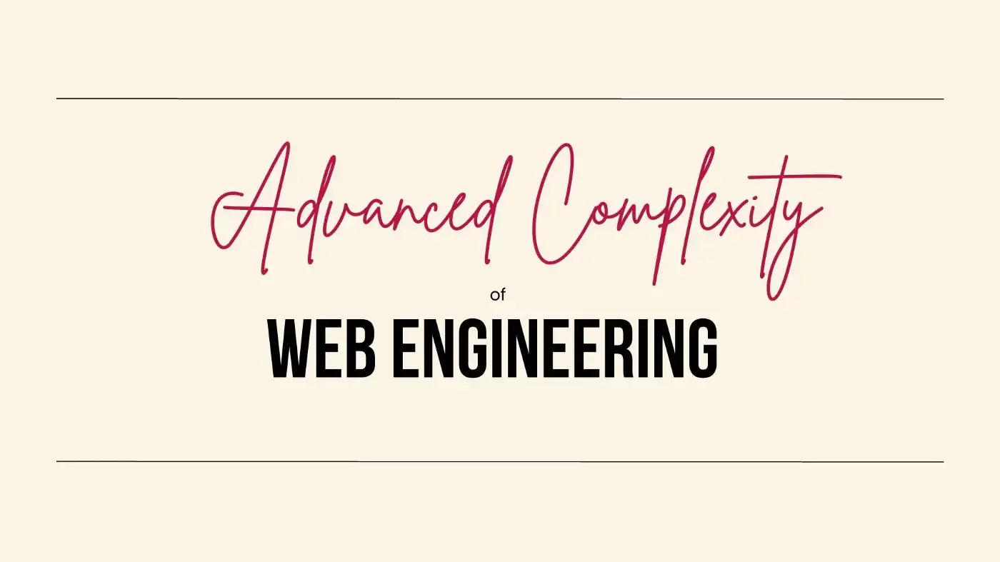

15 jan . 3 min read . member only . listen
Advanced Complexity of Web Engineering
I teach web, service and anything JavaScript, and TypeScript related to many students through online courses and individually.
It seems like there is a lot to learn, when I started development, knowing CSS and HTML was just enough. then I could add a button in the page and an iframe and I had a full-on website with fancy features.
Obviously, many of us slowly learned new changes, from AngularJS, React, NodeJS, AWS, React Native and so on, we had many years to know them, one after another was trending and we had numerous articles to read and learn them.
Some of us initiated the ideas, opened a repository to the community and led the innovation, however now!!
What’s happening?
Students are facing tons of names, and a lot of details, and having a button on the page is nowhere near the basic requirements.
Learning the web has become an advanced degree, needing months, or years to be just at the beginning of it. A junior knows a lot more than what a junior knew 10 years ago.
How to begin now?
Software Engineering in general is more complex, meaning you can’t just search and learn from articles, you need mentors, as years have passed by, the older ones are so experienced and can help you go quickly through what you need.
There are a lot of distractions now, if Angular and Dart, React and ChatGPT, it’s so confusing, Webpack or Rollup, you can’t learn it all, and you can’t go and pretend you know them as well.
A mentor who is already working as at least Senior Software Engineer might be able to help you with your path.
Rise of Lead Engineers, or Staff Engineers
A mentor has many faces, and the need in the market is to guide juniors, mid-levels and so on, These new fancy roles are a must for any company.
We need more and more people, our abilities to educate others, knowing how to teach, how to lead and how to have constructive conversations.
These people will learn the domain for any company, and can talk to stakeholders and also engineers, these are the bridge, if your company is struggling with the basics of Scrum, you need these roles to connect the dots.
Conclusion
If you are a beginner, find someone who you can connect with. ask them to guide you, if they already have courses, enrol in them, make sure you know them and can contribute to their vision. They will save you time like years.
and If you are a Senior, or a Lead Engineer, read more about soft skills, help your colleagues and answer more and more questions online, the trick is to explain a complex subject in really simple terms, you should learn how to know your audience, find their knowledge graph edges and continue on that to teach them new things.